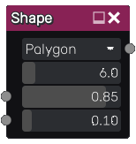

Shape node¶
The Shape node outputs a simple greyscale shape.
Inputs¶
The shape node accepts 2 optional greyscale input maps for the shape size and edge width (the corresponding parameter is multiplied by the map value).
Outputs¶
The shape node provides an output that generates greyscale image showing the selected white shape on a black background.
Parameters¶
The Shape node has the following parameters:
the shape type: Circle, Polygon, Star, Curved star or Rays
the edge, corners or rays count
the shape size
the size of the gradient at the edge of the shape
Example images¶